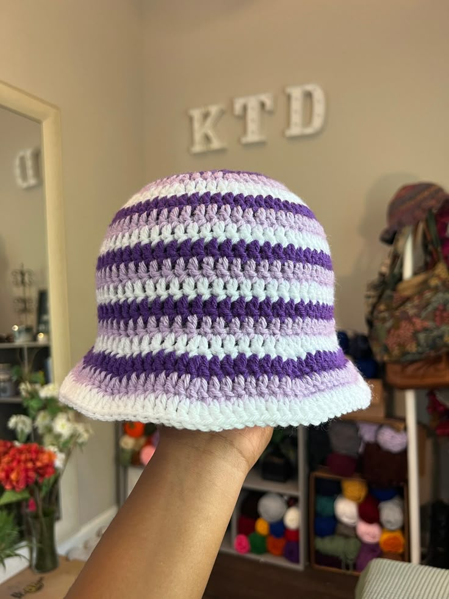
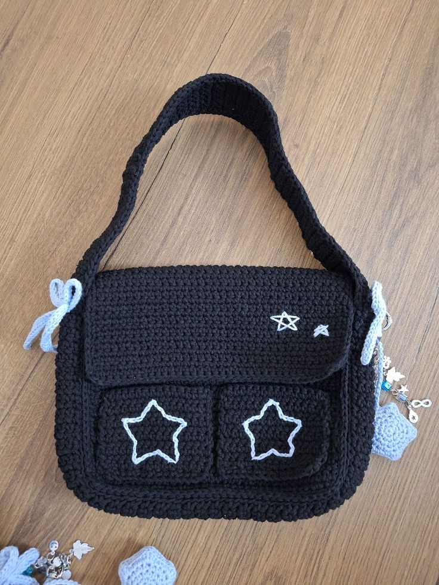
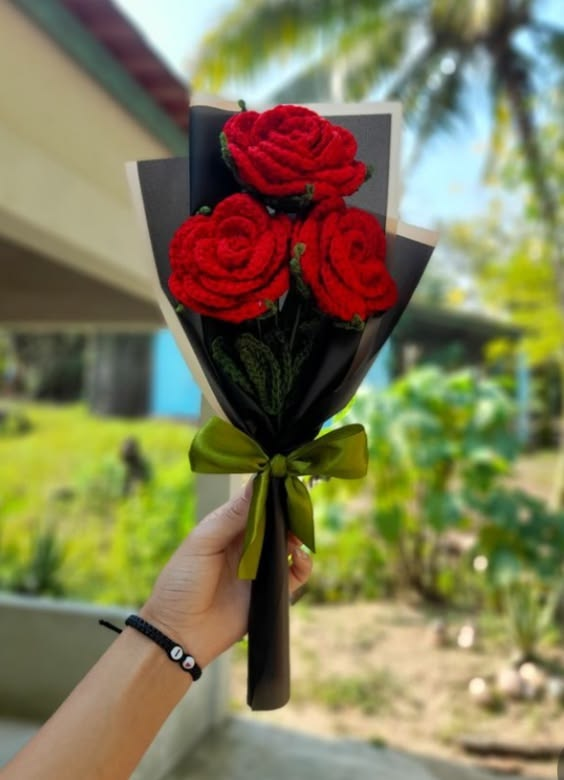
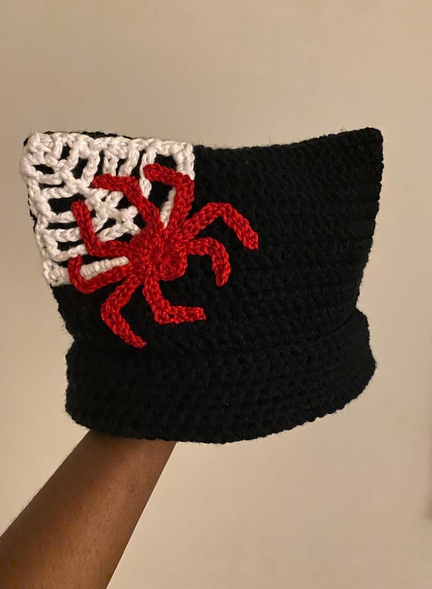

ABOUT ME
My name is Lucia Molalagare, I have been crocheting since November 2025 and recently just started my own business.
At LCrochet, every piece is carefully handmade with love using quality yarn and creative designs.
WHY CHOOSE LCROCHET PIECES?
*Handmade with love.
*High-quality yarn.
*Perfect for gifts and/or personal use.
*Custom orders are available.
Below are a few crochet projects I sell to all my crochet lovers;



